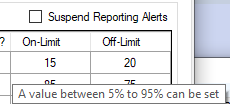

Overview
The following summarizes the features supported in the RTA tab of C# Sample Application for RTA configurations and RTA events. RTA supports the following list of scanners.
- DS8108
- CR8178/DS8178
RTA Configuration Settings
Viewing the RTA tab from the Sample application requires the following steps to be followed.
- Connect a scanner or Cradle/Scanner pair that supports RTA configurations and run the C# Sample Application.
-
Ensure the device is in one of the following host modes which supports RTA events.
- SNAPI
- IBM Handheld/USB OPOS
- TBM TableTop
- SSI Over USB CDC
- Open the RTA tab and select a cradle/scanner from the discovered scanners list.
Use the following options to view or configure RTA settings in the scanner.
-
Get Supported RTA Events - Lists all the RTA events supported by the scanner.
Figure 3: Supported RTA Events- The supported RTA events are shown in tabular format.
- The "Event" column represents the RTA event attribute. The tooltip of the event describes the event details.
- The "Stat" column represents the Stat type value. The tooltip describes the stat type details.
-
The following table includes RTA attributes and their functionality.
Table 1: List of RTA Attributes
RTA Attribute Number Stat Type Description 38004 7 Scanner is out of cradle for 'X' minutes (X is configurable).
Stat Type: 7 (A 'value' or 'counter' increased above its configurable X)38001 7 Scanner idle for 'X' minutes (X is configurable).
Stat Type: 7 (A 'value' or 'counter' increased above its configurable X)38003 13 Virtual tether alarm.
Stat Type: 13 (Any alarm condition)616 2 Track changes in config filed name.
Stat Type: 2 (State changed)30012 9 Send alert if battery charge level is below a threshold.
Stat Type: 9 (A 'value' or 'counter' decreased below its configurable X)30012 7 Send alert if battery charge level is above a threshold.
Stat Type: 7 (A 'value' or 'counter' increased above its configurable X)
- The "Registered" Column indicates whether the event is registered in the scanner. Unregistered events can be registered using the check box in this column.
-
On-Limit and Off-Limit columns indicate the RTA event trigger limits configured in the scanner.
- Values shown as "Not Applicable" are RTA event attributes that do not contain On/Off values to be configured.
-
Values shown as "Not Set" are event attributes for which On/Off limits have not been set. The respective tooltip of On/Off limit value displays the allowed range for values to be set.
Figure 4: Trigger Limits -
Attempting to set invalid values to On/Off limits displays an error message. Examples of error messages are given below.
Figure 5: Error On-Limit Values
Figure 6: Error Off-Limit Values -
Attempting to register into events without setting on-limit or off-limit (where applicable) display an error message. Example of message is below.
Figure 7: Error on Register Event with Empty Limit Values -
Attempting to set empty to On/Off limits displays an error message. Example of error message is given below.
Figure 8: Error on Empty Limit Values
-
Get Registered RTA Events - Lists all the registered RTA events supported by the scanner.
- The tabular format shown for registered events is the same as "Get Supported RTA events" representation.
-
If no events have been registered for the selected scanner, an information message is shown.
Figure 9: Error on Events Not Registered
-
Register RTA Events - Registers the currently selected RTA events in the selected scanner.
NOTE - Query the supported or registered RTA events and update the new registrations prior to calling "Register RTA Events". If no data is available to register RTA events, the following message will be shown.Figure 10: Insufficient Data to Register Events -
Get RTA Event Status - Lists the status of all the RTA events.
- The response is shown in tabular format, similar to "Get Supported RTA Events".
- Using the "Registered" check box, the events can be enabled or disabled.
- Using the "Reported" check box, the event's reported state can be enabled/disabled.
- The "Initialized" and "Measuring" options are read-only options.
-
Set RTA Event Status - Configures the RTA event status for the selected scanner. The status of "Suspend Reporting Alerts" is configured when setting the RTA event status.
NOTE - Query the RTA event status and update the new status values prior to calling "Set RTA Event Status". If no data is available to set RTA event status, the following message will be shown.
Figure 11: Error Status -
Clear All - Clears the populated Event details in the RTA configuration settings.
NOTE - This only clears the RTA data populated in the UI and does not include any configuration to the scanner.
-
Get RTA State - This will notify users about the current state of the RTA. Users would receive four RTA state types depending on the condition of the RTA events.
- RTA Fully Operational: At least registered for one event and RTA is fully functional.
- RTA Suspended: When RTA has suspended Reporting Alerts. (Remain configured, but the measurements are paused.)
- RTA awaiting Registration: When no registered RTA events. Waiting for at least one alert to be registered to start.
- RTA awaiting Context Address.
RTA Events
RTA events will notify the host when scanner/cradle transmit an event from one of the registered RTA events. The following steps are required to receive an event.
- Connect a scanner or Cradle/Scanner pair that supports RTA configurations and run the C# Sample Application.
-
Ensure the device is in one of the following host modes which supports RTA events.
- SNAPI
- IBM Handheld/USB OPOS
- IBM TableTop
- SSI Over USB CDC
- Open the RTA tab, and register required RTA events for the devices connected.
The RTA Event log grid displays the RTA events received from the device with RTA event data represented in tabular format.
- The Model and Serial number of the device that originated the RTA event is shown in the respective Model and Serial Number Columns.
- The "Event" column represents the RTA event attribute. The tooltip of the event describes the event details.
- The "Stat" column represents the Stat type value. The tooltip describes the stat type details.
- Data1 and Data2 columns show the RTA event data received with the RTA event raised from the scanner.
- Clear All option clears the content in the RTA Event Log grid. Note - this only clears the RTA data populated in the UI and does not include any configuration to the scanner.
NOTE - Additionally, the RTA event data can be viewed from the "Logs" tab to observe the RTA event structure returned from CoreScanner. Example is shown below.
<?xml version="1.0" encoding="UTF-8"?>
<outArgs>
<scannerID>2</scannerID>
<arg-xml>
<modelnumber>DS8178-SR0F007ZZWW</modelnumber>
<serialnumber>29988010556155 </serialnumber>
<GUID></GUID>
<rta>
<id>30012</id>
<type>12</type>
<data-1>99</data-1>
<data-2>0</data-2>
<raw-data>0x75 0x3C 0x00 0x0C 0x00 0x63 0x00 0x00 0x00 0x00 </raw-data>
</rta>
</arg-xml>
</outArgs>
RTA Supported Scanners and Firmware Versions
RTA following lists the scanners and firmware versions that supports RTA capabilities.
Table 2: RTA Supported Firmware Versions
| Scanner Model | Firmware Version | Features |
|---|---|---|
|
DS8108 CR8178 + DS8178 |
PAACZS00-011-N13 (Corded Scanner) PAACYS00-011-N13 (Cradle) PAACXS00-011-N13 (BT Scanner) |
|
|
PAACZS00-011-N12 (Corded Scanner) PAACYS00-011-N12 (Cradle) PAACXS00-011-N12 (BT Scanner) |
||
|
PAACZS00-011-N11 (Corded Scanner) PAACYS00-011-N11 (Cradle) PAACXS00-011-N11 (BT Scanner) |
||
|
PAACZS00-011-N10 (Corded Scanner) PAACYS00-011-N10 (Cradle) PAACXS00-011-N10 (BT Scanner) |
Support of RTA configurations and events across all targeted host modes. USB: SSI over CDC, IBM Handheld/TableTop, HidKB (for testing purposes only) RS232: SSI over RSI |
|
|
PAACZS00-011-N9 (Corded Scanner) PAACYS00-011-N09 (Cradle) PAACXS00-011-N09 (BT Scanner) |
Supports transmission of RTA alerts from scanner and cradle via SNAPI. | |
|
PAACZS00-011-N08 (Corded Scanner) PAACYS00-011-N08 (Cradle) PAACXS00-011-N08 (BT Scanner) |
Changed RSM attributes of RTA configurations (Previous implementation had them as Action attributes) All messages changed to be based on “Bug Endian” byte ordering. |
|
|
PAACZS00-011-N07 (Corded Scanner) PAACYS00-011-N07 (Cradle) PAACXS00-011-N07 (BT Scanner) |
First baseline provided for TnV and SL Dev Team with RTA support. |